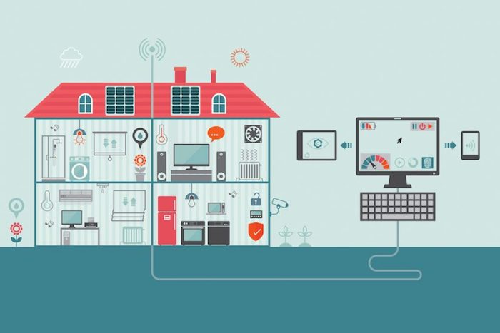
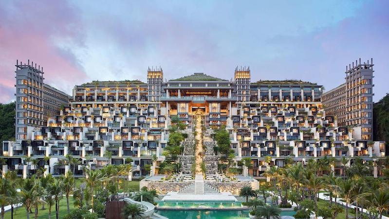
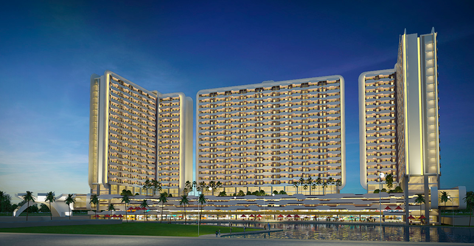
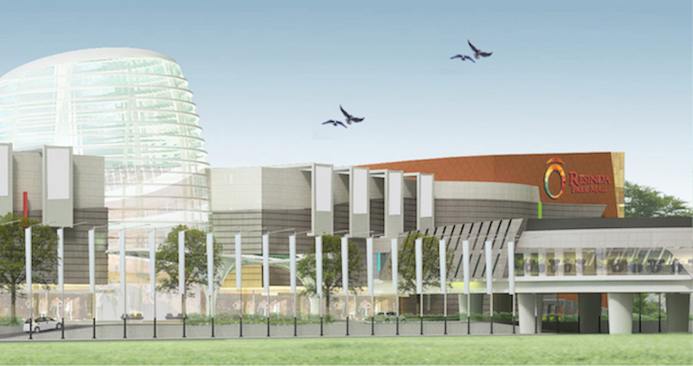

Manajemen Proyek
Apa itu project manager? Jika di alih bahasakan, maka project manager ini berarti orang yang memegang tanggung jawab terhadap suatu proyek. Sederhananya, yang disebut dengan apa itu project manager adalah seseorang yang menjadi pemimpin dari sebuah proyek yang penting. Ia akan jadi orang yang memegang kesuksesan sebuah proyek yang sedang dikerjakan perusahaan.
Menjadi yang disebut apa itu project manager yang baik, maka kamu harus bisa jadi team player yang baik. Intinya, kamu bisa menyeimbangkan diri antara memenuhi tuntutan target proyek sekaligus dapat mengoptimalkan kemampuan orang-orang yang ada di dalam tim proyekmu. Namun, karena kamu menjadi project manager, maka solusi yang kamu dapat harus memenuhi banyak pertimbangan. Pertimbangan apa sajakah itu? Pertimbangan risiko, pertimbangan rekan setim, dan juga pertimbangan yang didasari hasil analisis dari masalah. Jangan terburu-buru mengambil solusi, atau kamu akan jadi yang disebut apa itu project manager yang buruk. Santai dalam mengambil keputusan, pikirkan dengan matang, maka kamu akan jadi apa itu project manager yang baik.
Smart Building

Seiring berkembangnya kemajuan khususnya dalam bidang teknologi, kebutuhan akan sebuah bangunan dan hunian meningkat setiap tahunnya. Bukan hanya hunian, tetatpi juga kebutuhan juga menuntut untuk perkembangan teknologi yang lebih modern dan tentunya lebih canggih. Konsep sistem bangunan pintar atau yang sering kita sebut dengan smart building. Berbicara tentang smart building, mungkin sebagian orang yg tentunya menyukai tentang pembaruan khusus dibidang teknologi sudah sangat familiar ketika mendengar kata-kata tersebut. Tentu sangatlah awam ketika tapi sangatlah awam jikalau kita tidak cukup akrab dengan dunia teknologi pas ini. Hal ini kemungkinan disebabkan cabang dari smart building yang tergolong luas. Pada artikel ini mari kita bahas lebih singkat dasar dari smart building dengan harapan bisa lebih ringan di pahami.
Dari data yang di lansir dari halaman IBM Smarter Buildings Overview Dewan Sains dan Teknologi Nasional Amerika Serikat memperkirakan bahwa bangunan komersial dan residensial konsumsi sepertiga energi di dunia. Di Amerika Utara misalnya, 72 % dari pembangkit listrik, 12 % dari pemakaian air, dan 60 % dari limbah non-industri. Mempertimbangkan fakta lain. Jika trend energi digunakan di seluruh dunia terus menerus, sebuah bangunan bakal jadi konsumen terbesar daya international pada th. 2025-keatas.
Project Handling
Sejak tahun 2015, kami telah mengerjakan proyek-proyek High Rise Building, yang menjadi istilah dalam dunia Smart Building, dikarenakan mayoritas gedung-gedung yang mempunyai sistem kecerdasan ini merupakan gedung-gedung menjulang tinggi secara vertikal.
- Hotel Apurva Kempinski Resort Nusa Dua, Bali

Selalu ada sesuatu yang baru di Bali. Salah satunya kehadiran hotel dengan beragam konsep dan fasilitas. Semenjak dibuka 1 Februari 2019, The Apurva Kempinski menjadi resort terbaru dan termegah yang berlokasi di tepi tebing di kawasan Sawangan, Nusa Dua, Bali.
Apurva diambil dari Bahasa Sansekerta, yang berarti unik dan megah. Salah satu fitur arsitektur yang terpengaruh budaya Bali adalah gemericik aliran air pada himpunan 250 anak tangga yang terletak di tebing. Sistem aliran air tersebut terinspirasi dari konsep sistem pengairan sawah di Bali atau yang lebih dikenal dengan subak. Sistem itu menggambarkan hidup harmonis antara manusia dan Sang Pencipta, manusia dan manusia, serta manusia dan alam sekitar, atau lebih dikenal prinsip Tri Hita Karana.Ciri khas dan prinsip hidup Pulau Dewata sangat kental dalam desain arsitektur resor ini, seperti penggunaan batu alam, fitur lanskap yang menonjolkan flora lokal Bali, serta pengaplikasian gemiricik alunan air yang dilengkapi dengan keindahan kolam yang ditata dengan alami.Bagian arsitektur ini juga akan digunakan sebagai panggung untuk menampilkan ritual sebagai penanda senja.
Jobdesk : Jasa Sistem Elektronik, End to end Security System & Building Management System
- Apartemen Trivium Terrace Lippo Cikarang

Apartemen Trivium Terrace merupakan apartemen milik Lippo Group yang beralamat di Jl. Industri Selatan Blok H No. 1, Cikarang Selatan, Bekasi. Lokasi ini berada di kawasan Taman Danau Industri Hyundai sehingga dari balkon beberapa tipe unit mengarah ke pemandangan danau indah tersebut. Selain itu Apartemen Trivium Terrace ini juga sangat dekat dengan kawasan industri yang membuat Anda nyaman dengan banyaknya pusat perbelanjaan di sekitar sana. Untuk Anda yang masih sekolah maupun kuliah, apartemen ini memiliki jarak yang dekat menuju sekolah Al Azhar dan Universitas Pelita Harapan. Sedangkan jika Anda ingin berbelanja, tak jauh dari apartemen ini terdapat Mall Lippo Cikarang. Ada pula Lippo Cikarang Marketing Galery dan Hotel Sahid Jaya Lippo Cikarang. Anda juga bisa memanjakan diri Anda bersantai bersama teman-teman di Citywalk Lippo Cikarang karena banyak juga santapan lezat di Mall ini. Sebelahnya lagi terdapat McDonald’s Lippo Cikarang, Lippo Cikarang City Center Building dan Starbucks Lippo Cikarang.
Di kawasan dalam apartemen yang memiliki 764 unit dengan 22 lantai ini Anda bisa menggunakan kolam renang luas yang telah disediakan untuk bersantai sambil melihat pemandangan danau. Terdapat Cafe dan Restaurant juga sehingga Anda tidak perlu jauh-jauh keluar apartemen untuk mencari makan. Ada juga Jogging track yang memfasilitasi kebutuhan olah raga Anda di akhir pekan.Anda juga bisa mengajak anak Anda bermain di Children Playground maupun kolam renang. Fasilitas laundry juga disediakan untuk Anda. Tempat parkir yang luas serta pengamanan dengan CCTV 24 jam membuat kenyamanan apartemen ini terjamin, sehingga Anda tidak perlu khawatir mengenai keamanan di sana. Pemandangan danau yang menawan juga disuguhkan secara epic membuat mata Anda dimanjakan olehnya.
Jobdesk : Penyediaan Sistem Elektronik (Fire Alarm, Sound System, Audiophone, PABX, MATV, CCTV)
- Resinda Park Mall Karawang

Pertumbuhan investasi baik industri maupun pariwisata di Kabupaten Karawang terus menunjukkan pertumbuhan yang pesat. Hal tersebut terbukti dengan diresmikannya Resinda Park Mall yang terletak di Jl Enterchange Karawang Barat dengan Ceremony Pengguntingan Pita oleh Wakil Bupati Karawang H. Ahmad Zamakhsyari serta didampingi jajaran Direksi dan Manager dari Resinda Park Mal, tepatnya pada hari Sabtu, 25 Maret 2017. Dalam sambutannya Wakil Bupati menyampaikan, jika berbicara Karawang 10 Tahun yang lalu, Karawang merupakan Lumbung Padi Nasional, dimana terdapat hamparan sawah dan pertanian yang tentunya sangat luas. Tapi kini seiring kemajuan zaman, Karawang telah menjadi Kawasan Industri terbesar di Asia serta sebagai daerah penyangga Ibu Kota. Lanjutnya, walaupun kini Karawang telah menjadi Kawasan Industri terbesar, namun Karawang akan tetap menjaga citranya sebagai Lumbung Padi Nasional dengan cara mempertahankan lahan lahan pertanian untuk tidak diubah alih Fungsinya sebagai lahan Non Pertanian.
Terletak di Jl. Resinda Raya No.2, Purwadana, Kec. Karawang Barat, Kabupaten Karawang, Jawa Barat menjadikan Resinda Park Mall Karawang sebagai salah satu Most One Stop Shopping Mall guna memanjakan masyarat dari berbagai kalangan di lingkungan Karawang maupun daerah tetangga (Bekasi, Cikarang dan Purwakarta) saat liburan weekend bersama sanak family maupun rekan sejawat.
Jobdesk : Sistem CCTV dan GPON